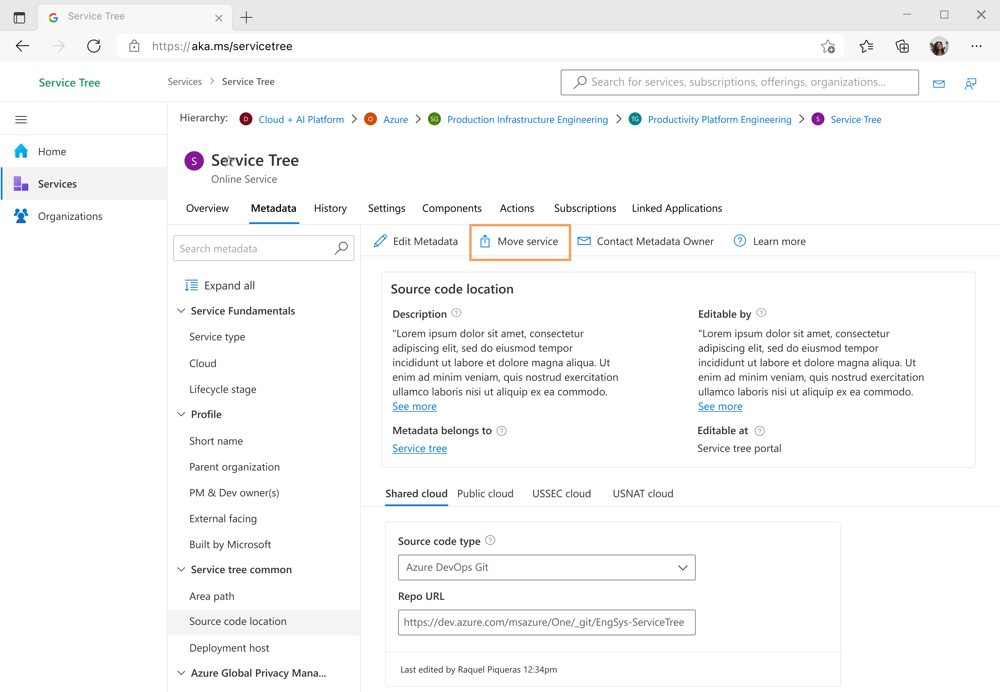
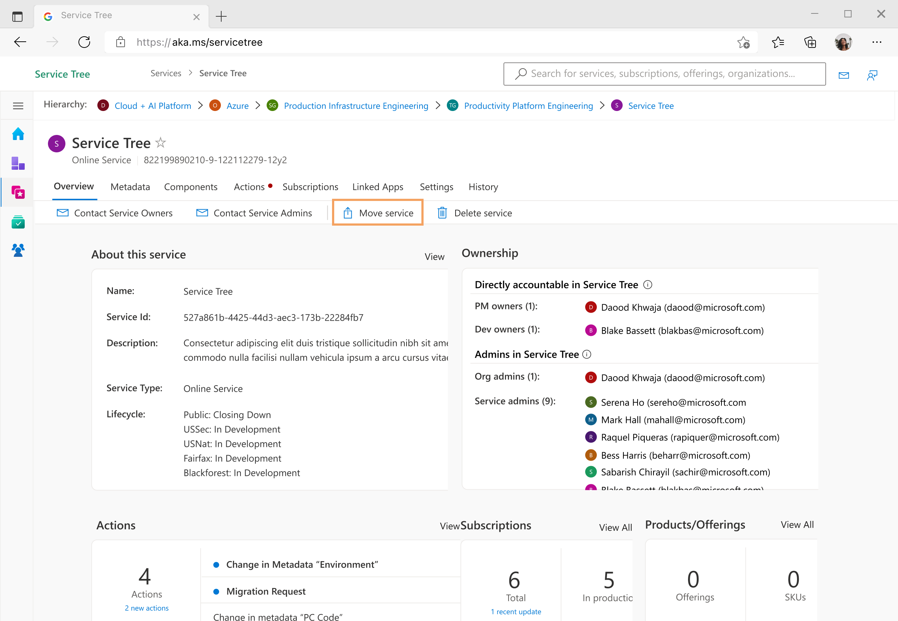
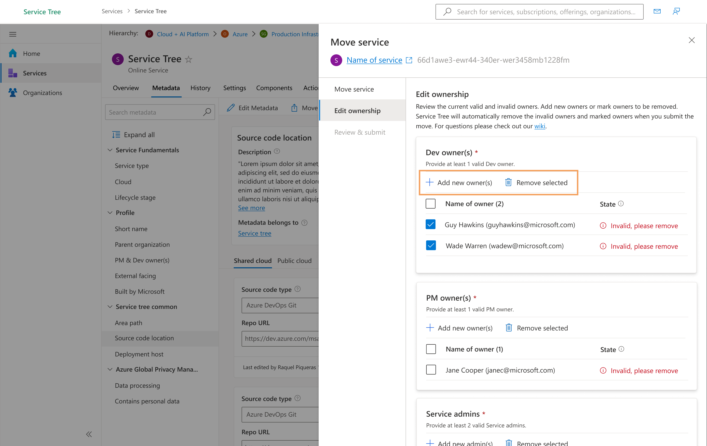
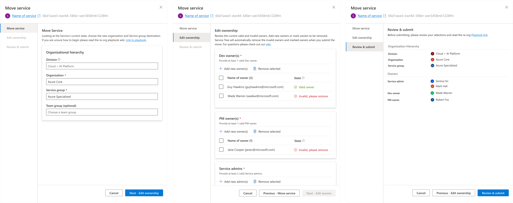

A process-change story. I introduced a time-boxed design-sprint model to a fast-moving Azure team that had been shipping without research—then redesigned Service Tree's service-migration flow to prove the new way of working delivered.
Overview
Service Tree is Microsoft's master directory. It contains the source of truth for the metadata behind every internal service. Keeping that metadata accurate is critical. During re-orgs and platform changes, service owners must handle migrating services manually to stay up-to-date.
Following a major internal re-org, Service Tree's ownership transitioned to our team charter. I partnered with the Product team to help solve key usability pain points, while pursuing a strategic goal of elevating the team's overall design maturity.
The team's maturity level was rated as "Emergent" based on Nielsen Norman's 6 stages of UX maturity.
The Process Change
Historically, the team lacked confidence in UX timelines, frequently skipping vital user research and design validation to meet aggressive shipping dates. To repair trust and fit design activities to the team's rapid pace, I introduced a streamlined engagement timeline modeled on Jake Knapp's Design Sprint methodology.
This time-boxed structure fostered close collaboration with PMs and developers, providing validated user feedback in days instead of weeks, and establishing design quality without sacrificing deployment speed.
Drag to compare the past process with the new sprint model
Project Goals
Validation & Testing
Partnering with a User Researcher, we conducted two testing sessions with active service owners. The first session collected feedback on early wireframes and concept models. The second session validated the final visual designs in a comparative study. We successfully iterated and finalized the user flow within a single week. 3 out of 3 users agreed that the redesigned wizard was a massive improvement over the legacy tool.
“This is fantastic. I want to thank you so much for reaching out sharing early with me and giving me an opportunity to help shape the future here. This is tremendous. I really do think this is going to help a lot of the folks like me across Microsoft.”
— Service Owner @ MicrosoftThe Designs · What the Process Produced
The redesign below is the output of that sprint process—evidence that faster cycles still produced rigorous, validated work. I reworked the migration wizard to eliminate configuration mistakes and improve discoverability across three core areas:




Post Deployment
Following deployment, the redesigned migration flow succeeded in making service moves a self-service task and established a higher maturity for design engagement: